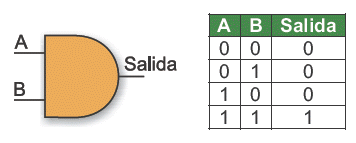
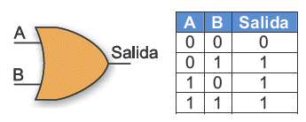
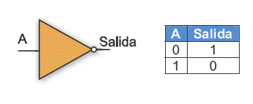

Una compuerta lógica es un dispositivo utilizado en Electrónica Digital que trabaja con estados lógicos tanto en sus entradas como en salidas, posee caracteristicas especiales individuales que corresponden a leyes aritmeticas. Las entradas de estos dispositivos se acostumbra representarlas con las primeras letras del alfabeto y las salidas con las últimas.
Internamente una compuerta está formada por transistores, que se encuentran con arreglos especiales de manera que la funcion operacional coincida con la definición de cada una de ellas.
Las compuertas además de tener un símbolo esquemático que las distingue posee una expresión representativa para cada una de ellas, a dicha expresión se le conoce como expresión booleana y consiste en proporcionar una información de la operación que realiza.
Compuerta AND
Con dos o más entradas, esta compuerta realiza la función de la multiplicación. Su salida será un 1 cuando todas sus entradas también estén en nivel alto. En cualquier otro caso, la salida será un 0. El operador AND se lo asocia a la multiplicación, de la misma forma que al operador SI se lo asociaba a la igualdad. En efecto, el resultado de multiplicar entre si diferentes valores binarios solo dará como resultado 1 cuando todos ellos también sean 1, como se puede ver en su tabla de verdad. Matemáticamente se lo simbolizará con el signo x.
Compuerta OR
La función que realiza la compuerta OR es la asociada a la suma, y matemáticamente la expresamos como +. Esta compuerta presenta un estado alto en su salida cuando al menos una de sus entradas también esta en estado alto. En cualquier otro caso, cuando todas sus entradas son 0 la salida será 0. Tal como ocurre con otras compuertas, el número de entradas puede ser mayor a dos

Compuerta NOT
Esta compuerta presenta en su salida un valor que es el opuesto del que está presente en su única entrada. En efecto, su función es la negación, y el círculo en la salida significa que proporciona el estado opuesto. Se utiliza cuando es necesario tener disponible un valor lógico opuesto a uno dado. La figura muestra el símbolo utilizado en los esquemas de circuitos para representar esta compuerta, y su tabla de verdad. A menudo se le conoce como inversor.

Compuerta XOR
La compuerta Or exclusiva realiza la operación lógica correspondiente a comparación, es decir, una de las entradas deben estar en 1 y la otra en 0 para que la salida sea 1. En caso de que ambas entradas estén al mismo nivel lógico la salida pasará a 0. Nótese que en la expresión booleana el signo + está rodeado por un circulo.
Compuerta NAND
Cualquier compuerta lógica se puede negar, esto es, invertir el estado de su salida, simplemente agregando una compuerta NOT que realice esa tarea. Debido a que es una situación muy común, se fabrican compuertas que ya están negadas internamente. La compuerta NAND es simplemente la negación de la compuerta AND vista anteriormente. Esto modifica su tabla de verdad, de hecho la invierte (se dice que la niega) quedando que la salida solo será un 0 cuando todas sus entradas estén en 1. El pequeño círculo en su salida es el que simboliza la negación. El numero de entradas debe ser como mínimo de dos, pero no es raro encontrar NAND de 3 o mas entradas.
Compuerta NOR
Una compuerta Nor es la negación de una compuerta Or, obtenida agregando una etapa Not en su salida. Si se observa su tabla de verdad, la salida de una compuerta Nor es 1 solamente cuando todas sus entradas son 0. La negación se expresa en los esquemas mediante un círculo en la salida. El número de entradas también puede ser mayor a dos.
Compuerta Exnor.
Una compuerta Exnor (XNOR) no es más que una Exor con su salida negada, por lo que su salida estará en estado alto solamente cuando sus entradas son iguales, es decir tengan el mismo nivel lógico y la salida estará en estado bajo para cuando las entradas estén a diferente nivel lógico.
Compuerta Yes.
Realiza la función booleana de la igualdad. Su tabla de verdad es también sencilla: la salida toma siempre el valor de la entrada. Esto significa que si en su entrada hay un nivel de tensión alto, también lo habrá en su salida; y si la entrada se encuentra en nivel bajo, su salida también estará en ese estado. En electrónica, generalmente se utilizan compuertas Yes para aumentar el nivel lógico cuando ya esta débil, como si fueran amplificadores.